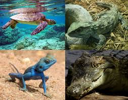

Reptiles, as commonly defined, are a group of tetrapods with an ectothermic ('cold-blooded') metabolism and amniotic development. Living traditional reptiles comprise four orders: Testudines (turtles), Crocodilia (crocodilians), Squamata (lizards and snakes), and Rhynchocephalia (the tuatara). As of May 2023, about 12,000 living species of reptiles are listed in the Reptile Database.[2] The study of the traditional reptile orders, customarily in combination with the study of modern amphibians, is called herpetology.
